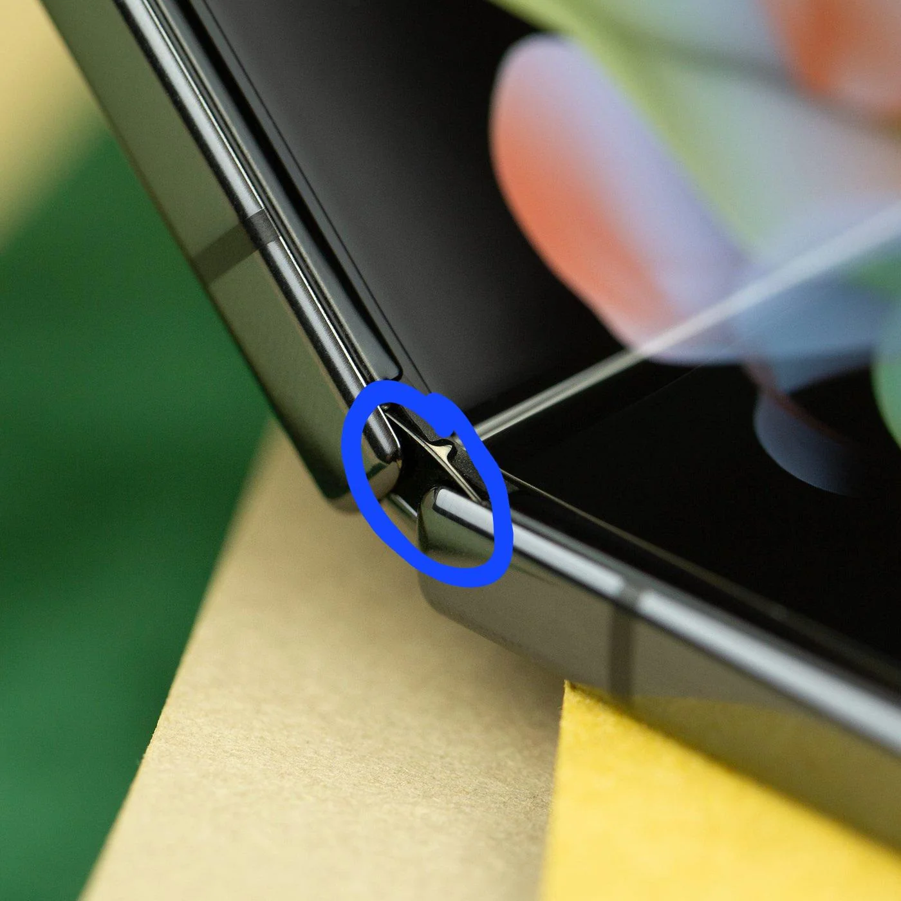
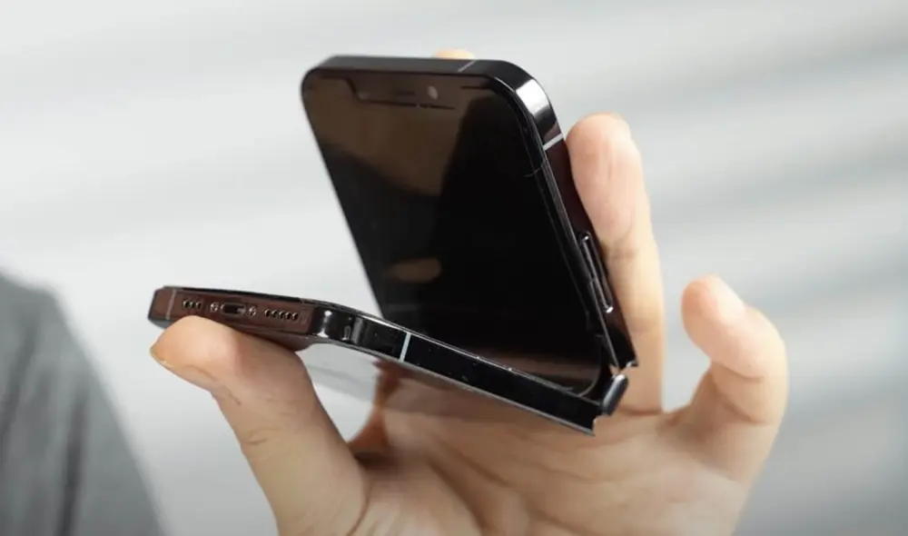

Mecanismo de BisagraLas bisagras de gota de agua permiten cerrar el dispositivo completamente plano sin dejar espacios luz donde entre polvo. Su estructura interna de titanio aeroespacial garantiza más de doscientos mil pliegues seguros sin deformaciones. |
Paneles Ultra Thin GlassCapas de vidrio flexible extremadamente delgadas se combinan con protectores plásticos elásticos. Esto permite doblar el panel OLED de forma fluida, modificando la interfaz del software automáticamente según el ángulo de apertura. |

